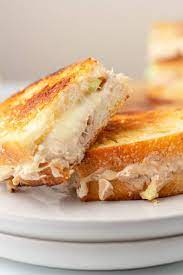

Tuna Melt

Description
Delicious melted cheesy tuna sandwiches.
Ingredients
- French Bread
- Sweet Onion
- Tuna
- Mozzarella Cheese
- Mayonaise
Steps:
You'll find the full, step-by-step recipe below — but here's a brief
overview of what you can expect when you make tuna melts at home:
- Preheat oven to 350 degrees F (175 degrees C).
- In a mixing bowl, combine sweet onion, drained tuna, mozzarella, and mayonnaise. Mix thoroughly.
- Spread tuna mixture on slices of French bread to form a sandwich. Place sandwiches on a cookie sheet.
- Bake in a preheated oven for 10 minutes.
Return to top
Return to main page